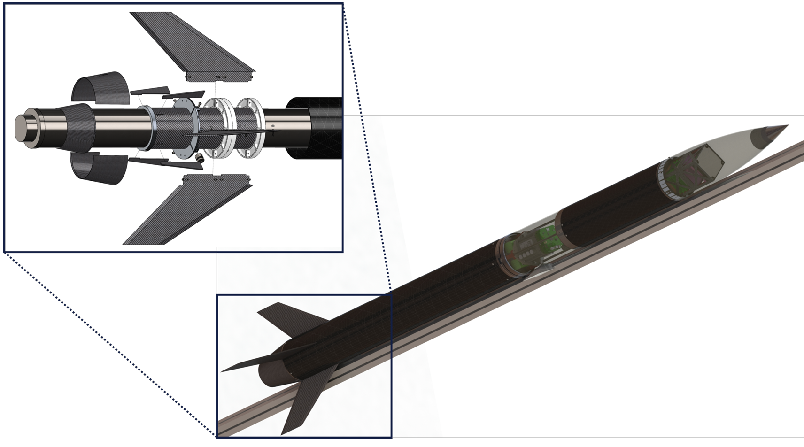
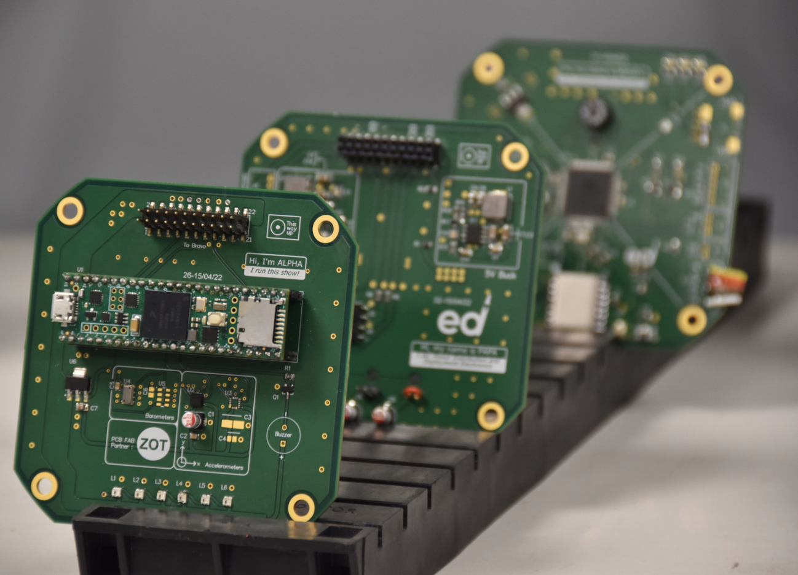
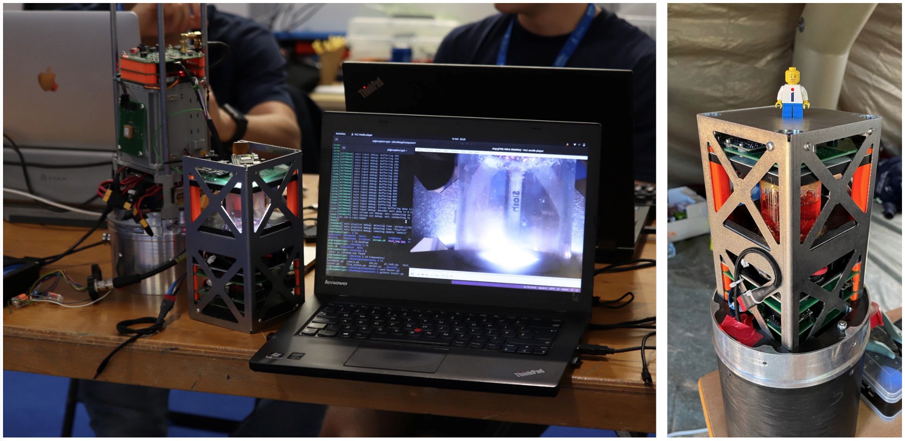
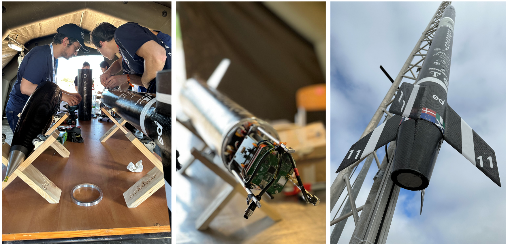
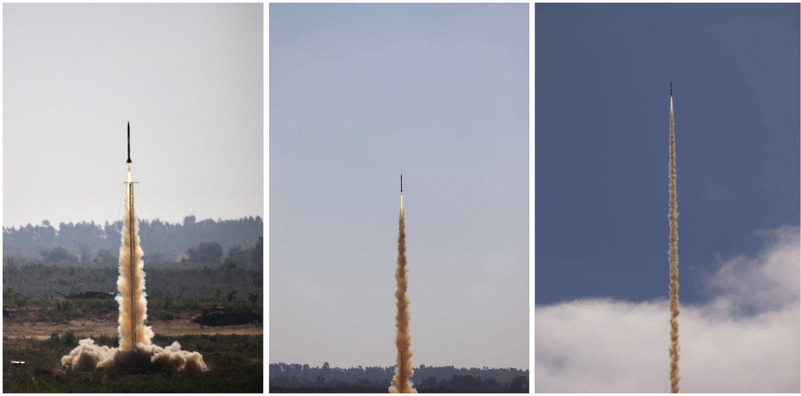
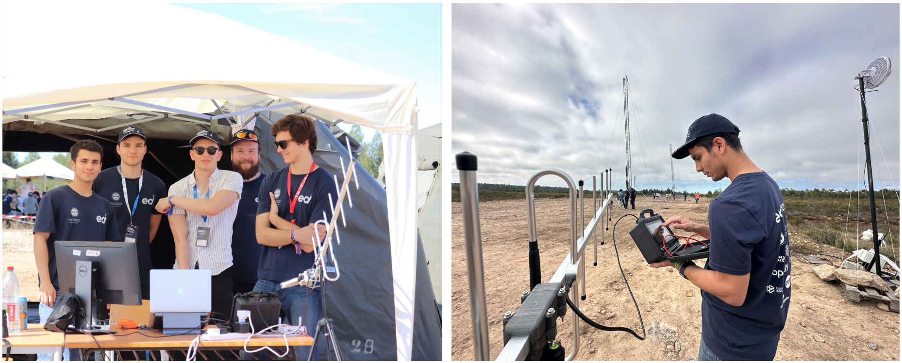
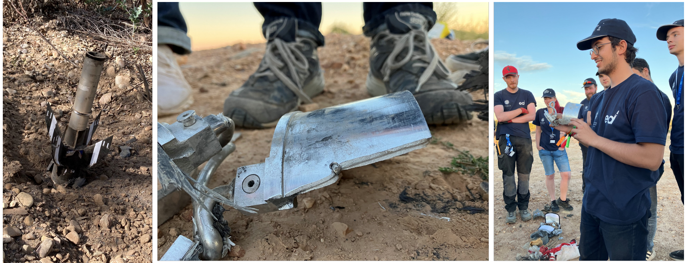
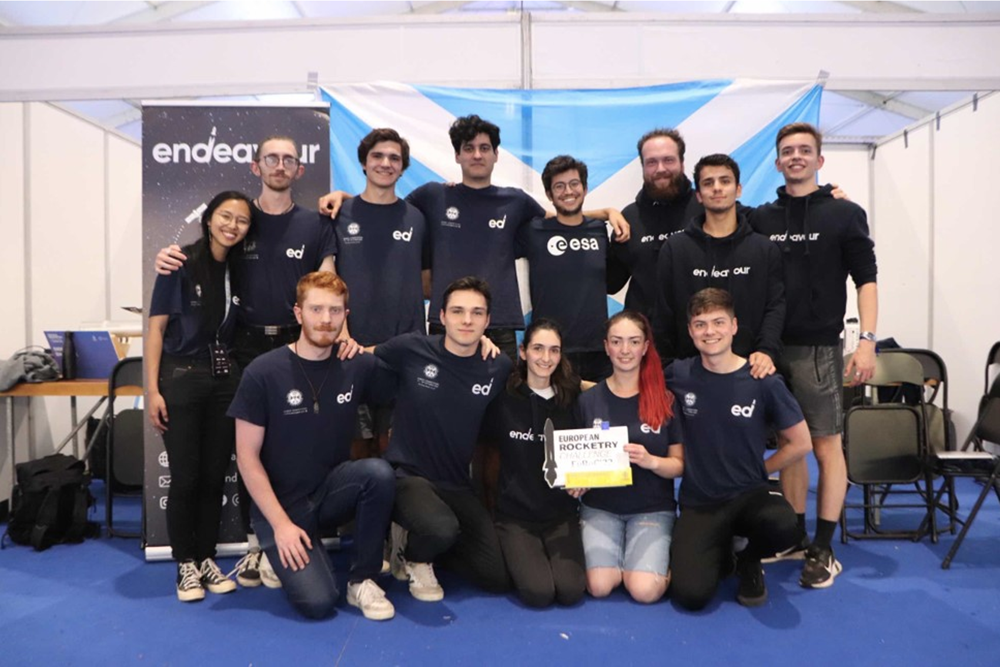

Darwin III
Endeavour, The University of Edinburgh Student Rocketry Team
My role: Technical Lead and Flight Director

Overview
Darwin III is Endeavour's entry to the European Rocketry Challenge (EuRoC) 2022, held at the Santa Margarida Army Base in Portugal. It is the third rocket in the Darwin series and the successor to Darwin II, the team's first supersonic rocket, which competed at EuRoC 2021. Darwin III targets a 9,000 m apogee at Mach 1.7, carrying two scientific experiments and a fully student-developed avionics stack.
The vehicle is a 34.334 kg sounding rocket powered by a Cesaroni Technologies O3400 solid motor, producing 500 kg of thrust over a 6.2-second burn. The airframe is manufactured from CFRP composites (supplied by M-Carbo) and CNC-machined 7075-T6 aluminium bulkheads and structural rods, machined in the University of Edinburgh mechanical engineering facilities.

Technical Reports
Vehicle & Subsystems
The Darwin team is structured across five sub-teams (Structures, Software, Avionics, Payload, and Recovery), each responsible for the design, manufacture, and testing of their respective systems. Key features include:
- →Structure: CFRP airframe composites with CNC-machined 7075-T6 aluminium bulkheads and force rods. Designed to withstand 15G axial acceleration and validated against the 5000N thrust load.
- →Avionics: A fully student-researched and developed (SRAD) avionics stack comprising over 10 custom PCBs handling datalogging, guidance, telemetry, GPS, and recovery event triggering. Avionics project .
- →Active airbrake: SRAD drag-control system used to modulate the apogee altitude during ascent.
- →Recovery: Dual-event parachute system (drogue + main) with SRAD deployment mechanism and COTS tender descender.

Payload: ESA Award Winner
Darwin III's payload was recognised by the European Space Agency Payload Award as the best out of over 20 experiments presented by teams competing in EuRoC 2022.
The payload carried two scientifically significant experiments:
- 1.Muon detector: A student-built and ruggedised version of MIT's CosmicWatch Muon Detector, designed to measure how cosmic ray muon detection rates change with altitude and correlate with special relativity predictions. Developed in collaboration with the UoE School of Physics.
- 2.Fluid slosh experiment: A wide-angle lens camera observing propylene glycol behaviour during flight to study wave fluid dynamics under near-zero gravity conditions, with results intended for CFD validation.

Integration & Pre-Launch
Darwin III was assembled in four main segments (nosecone, payload bay, avionics bay, and lower body with motor), integrated and checked over in the on-site tent at the Santa Margarida Army Base. The full vehicle was assembled and ready for launch in under 30 minutes in the desert environment, a direct result of the team's meticulous pre-launch checklists and procedure discipline developed over the campaign.

The Launch: 15 October 2022
Ignition occurred at 12:00:28 GMT. The O3400 motor's manufacturer-supplied igniter had failed the previous day due to launchsite humidity; a more energetic igniter was fitted on launch day. The vehicle lifted off cleanly under 500 kg of thrust, accelerating at 15G (150 m/s²). A sonic boom was confirmed by Mission Control and spectators shortly after motor burnout, consistent with trajectory simulations. GPS telemetry was automatically cut off at supersonic speed per CoCoM export regulations, and SRAD telemetry was lost due to tracking issues at high velocity.
EuRoC Mission Control received a single GPS coordinate once the vehicle exited the supersonic regime, confirming Darwin III crossed max-Q without structural failure. The vehicle ascended remarkably straight, a validating to the stiffness of the structure and accuracy of the fin construction.



Recovery & Outcome
Visual confirmation of drogue or main parachute ejection was never received. The nosecone failed to separate at apogee, preventing the recovery sequence from initiating. Darwin III entered a ballistic descent, reaching a terminal velocity of 251 m/s and impacting the Portuguese soil (a dry mixture of gravel, sand, and sharp rock), penetrating approximately 600 mm and releasing 724,000 J of kinetic energy in 8 milliseconds. 80% of the vehicle disintegrated on impact.
The aft section (fins and thrust structure) was recovered nearly intact, with only impact damage from the forest canopy. The FLASH chip from the COTS Quantum Flight Computer was salvaged in good condition, with data recovery attempted upon return to Edinburgh. No signs of aero-thermal delamination or fin flutter fatigue were observed on the composite structure, validating the team's structural design through the most aggressive flight stages.
Mission Outcome
- →4 out of 6 mission goals achieved: a partial success despite the off-nominal recovery.
- →Supersonic flight confirmed, validating CFRP structure through max-Q at Mach 1.7.
- →SRAD avionics performed nominally during flight; transmission power identified for improvement.
- →ESA Payload Award: best scientific payload across all EuRoC 2022 competing teams.
- →Full vehicle assembled in under 30 minutes in the field, a testament to the team's operational processes and integration discipline.
